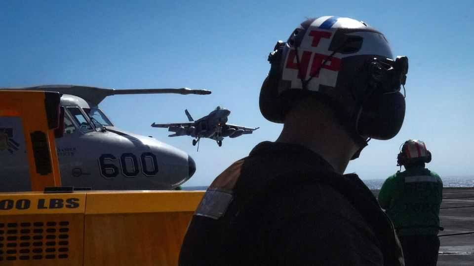
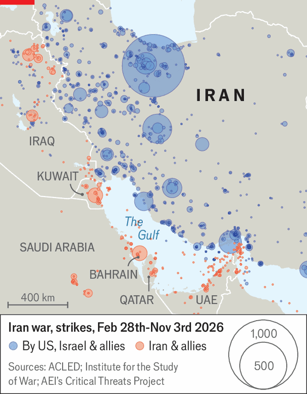

Gulf states brace for war with Iran—again
Their air defences are dangerously depleted

Nov 5th 2026
DRIVE ALONG Bahrain’s King Khalifa causeway into Manama, the capital, and the war damage to America’s main naval hub in the Gulf is apparent: destroyed communication antennae on one side; blackened buildings on the other. Gashes in high-rise buildings are boarded up.

Iran fired more than 700 missiles and attack drones at Bahrain at the height of the American-Israeli war on Iran between February 28th and April 8th. Most were intercepted but some inflicted real damage. Iran hit not only military targets but also a desalination plant, refineries and an aluminium factory. A similar trauma was felt elsewhere in the Gulf (see map).
Now a second round of the war looms. To the east, the USS Theodore Roosevelt carrier strike group is sailing to join two others in the Arabian Sea. To the west, an American airlift is ferrying military equipment to bases in Israel and Jordan, including more Patriot air-defence batteries. American strikes against Iranian anti-aircraft missiles on Qeshm island this week were seemingly provoked by threats to American drones and jets, but may also serve to prepare the battlefield.
Gulf states fear that President Donald Trump may lash out abroad after being wounded in the midterm elections at home (see Briefing). They also expect to be the target of Iran’s wrath, as it threatens to respond “without geographical limitations”.
Stocks of Western missile interceptors are severely depleted worldwide. Ukrainian and other systems may help Gulf states reduce the threat from drones, though these are improving fast. Israeli intelligence officials, meanwhile, express surprise at the speed of Iran’s build-up of missile stocks since the ceasefire.
After weeks of air strikes during Israel’s and America’s Operation Epic Fury, many question what can be achieved by more bombing—“a little Epic Fury”, as Mr Trump called it. The pair probably struck all the easy targets and the main nuclear sites at Fordow, Natanz and Isfahan were previously bombed in 2025, burying some 400kg of highly enriched uranium.
What remains are mostly hard-to-reach places, such as underground “missile cities” that Iran’s Islamic Revolutionary Guard Corps has been showing off on television. Entrances to such facilities were bombed in the first round but many seem to have been excavated since. American stocks of the biggest bunker-buster bombs appear to be running low.
Much attention focuses on mysterious work at “Pickaxe Mountain”, possibly another nuclear facility. It is buried so deep in granite that it may be beyond the reach of conventional bombs (raising unsubstantiated claims that Mr Trump might use a nuclear weapon against it). Officials in the United Arab Emirates (uae) say they are “braced for the worst”, and vow to defend their country.
The uae endured the heaviest Iranian fire in the war, facing a total of more than 2,800 Iranian missiles and drones, perhaps because of its close ties with Israel. But it also boasts the region’s most powerful air defences with overlapping layers of interceptors, supplemented by guns on attack helicopters, home-made electronic-warfare gear and perhaps Israeli laser weapons. Saudi Arabia will find it harder to defend its territory, given its larger size and sprawling infrastructure. It also faces threats from both Iran and its Yemeni ally, the Houthi militia.
As America pulls forces and equipment farther from Iran—mainly to Israel and Jordan—the future of its bases in the Gulf is open to question. Increasingly, Gulf leaders are looking for protection elsewhere. Saudi Arabia, for instance, has signed the Mecca pact with Pakistan and Turkey, which have deployed or are thinking of sending forces. What they would do in an actual war remains to be seen.
Deeper integration among Gulf countries would help—not least in setting up joint air defences. But ever-bickering Gulf states have mainly sought national or bilateral security deals rather than collective ones. Gulf states' ability to stand together against the Iran challenge, admit Emirati officials, “has proven hollow”. ■